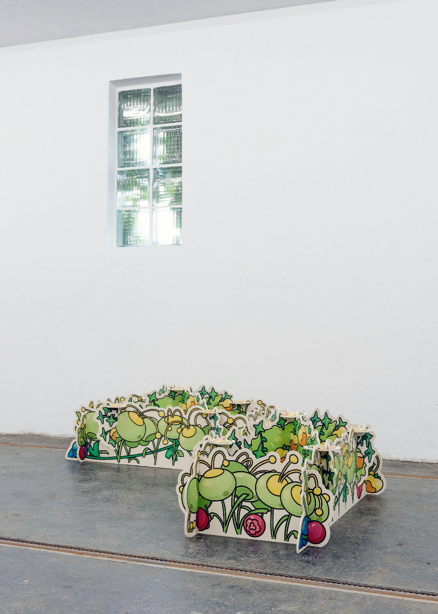
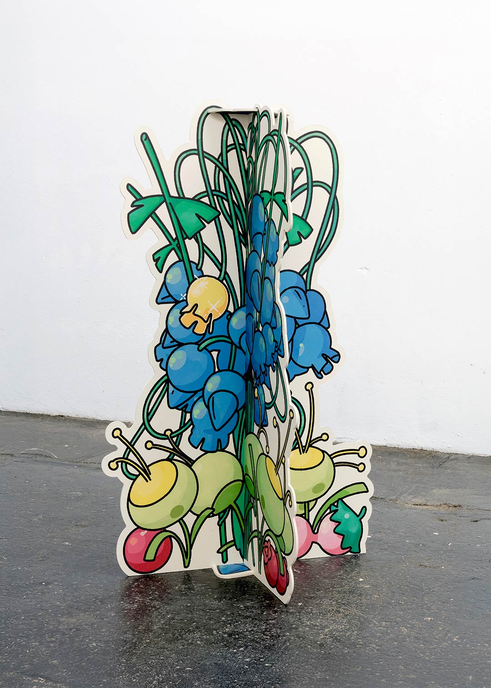
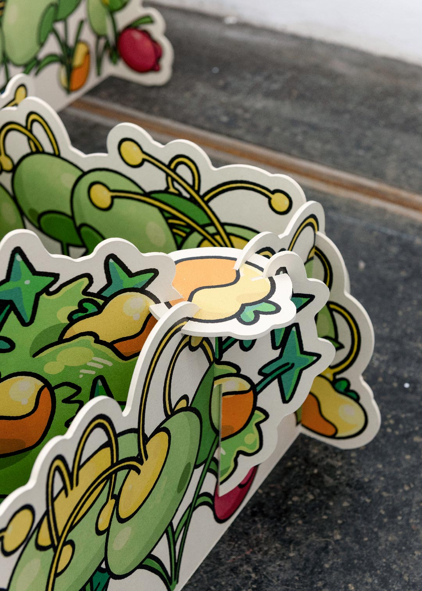
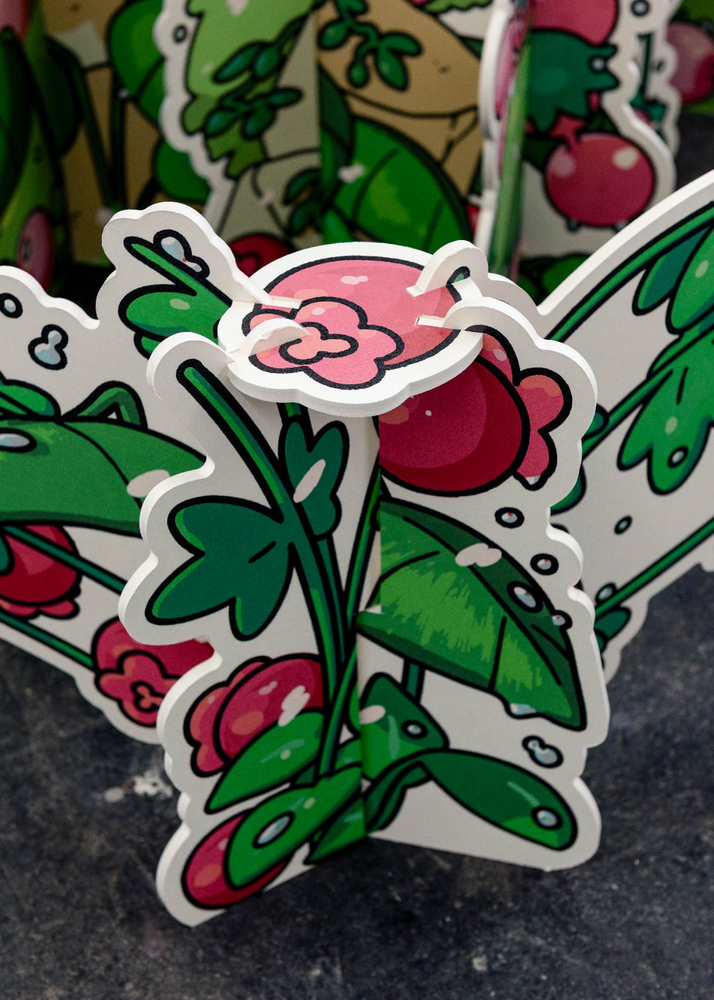
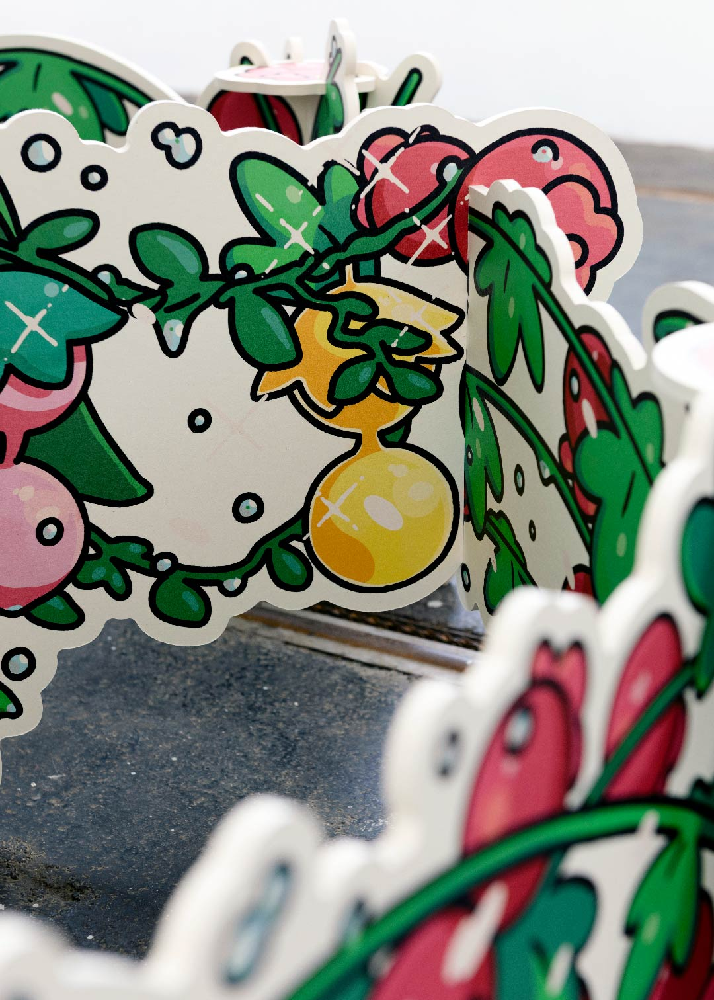

index | shop | info | contact | chaos
A Dazzling Gleam is an indoor garden installation, commissioned by Design in Gesellschaft↗ and presented in its space in Vienna in February 2025. Made in collaboration with Canon Europe↗ and Kohlschein GmbH↗, the piece uses printed display materials typically found in advertising to reimagine the trade-show stand as a botanical object in itself.
Drawing on kawaii aesthetics, it forms a sparkling, symmetrical garden landscape, complemented by a sound installation by Franz Ehn↗.
A Dazzling Gleam, Design in Gesellschaft↗ (Vienna, 2025) | Wood fiber boards, UV-print | 912. 570. 205cm | img01 to img07 by Lea Sonderegger↗






words by Johanna Pichlbauer↗ on A Dazzling Gleam, Design in Gesellschaft↗ (2025)
"Gardens have been commissioned for many reasons beyond mere recreation. They have been created to comfort loved ones, replace lost homelands, showcase wealth, or even embody philosophical ideas in botanical form. Some gardens hold special intrigue, such as the Poison Garden, where the Duchess of Northumberland displays her collection of deadly plants, or the opulent gardens of Versailles, commissioned by Louis XIV, where nature itself was made to submit to his vision. At Schönbrunn, Maria Theresa famously commissioned an illusionistic garden landscape, painted by Johann Wenzel Bergl across four chambers, to bring nature indoors when her advancing age kept her from enduring the harsh sun outside. These rooms burst with flora and fauna from faraway ecosystems.
In collaboration with German packaging producer Kohlschein, Delasalle has crafted a botanical world printed and propped up like a display. The materials, typically used in advertising—perfume stands at trade shows and pop-up exhibits—have here been reimagined, allowing the display itself to take center stage. Unlike conventional displays, which exist to showcase an external object, this garden is the object; it does not frame something else but instead asserts itself as the thing to be admired. His garden is everything one might expect from a designer raised in the shadow of Versailles: meticulously symmetrical, lush, and sparkling. There's a fountain, little pathways, and a profusion of blossoms in varied colors. If the Duchess of Northumberland's plants are dark and venomous, Delasalle’s flora feels like the antidote—bubbly, cheerful, and waiting to be played with.
A graduate of the École Boulle and the Design Academy Eindhoven, Delasalle is fascinated by how nature is represented in pop culture and has an aesthetic obsession with Pokémon. His garden taps into the language of kawaii, the Japanese concept of cuteness that dominates anime, manga, and gaming culture. In kawaii aesthetics, characters and objects often have rounded shapes, exaggerated proportions, and soft, non-threatening features—design elements carefully crafted to elicit feelings of affection and playfulness. This principle extends beyond living beings; even inanimate objects, from everyday household items to landscapes, can be stylized to appear friendly and inviting.
Like Pokémon, which designs its creatures with large eyes, simplified facial expressions, and an inherent sense of charm to encourage an emotional connection, Delasalle's plants seem to have personalities of their own. They are not just decorative but animated in spirit, as if each flower and leaf were a character waiting to be interacted with. The cuteness is intentional—it transforms the idea of a traditional garden into something interactive, reminiscent of digital landscapes where nature is gamified and endlessly appealing. But while Pokémon's world teems with lively creatures, Delasalle's garden is conspicuously missing the usual actors—pollinators and animal visitors.
Are we supposed to be the bugs, Alexandre?"
*This website was last updated on July 1, 2026.